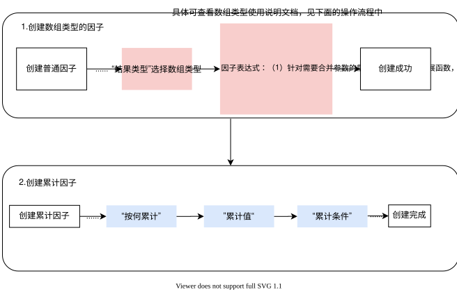
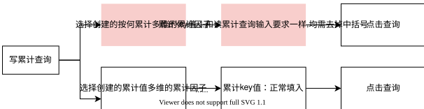
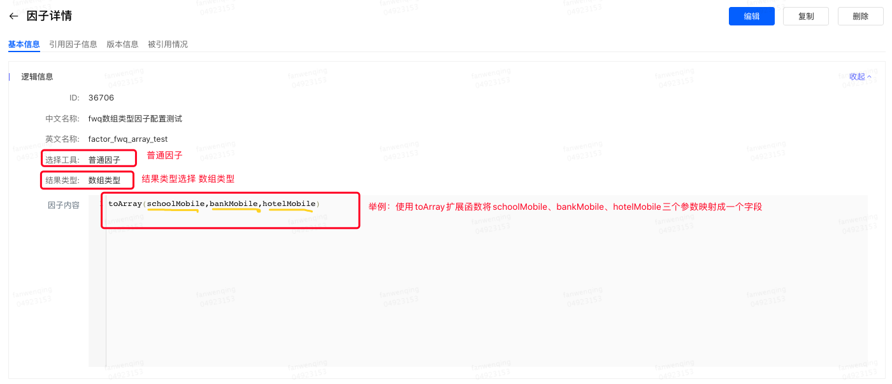
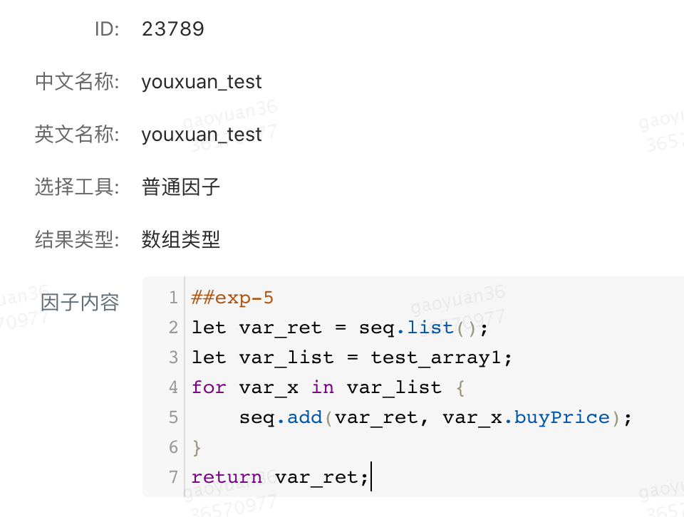
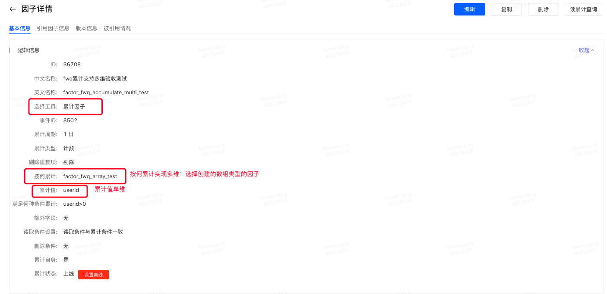
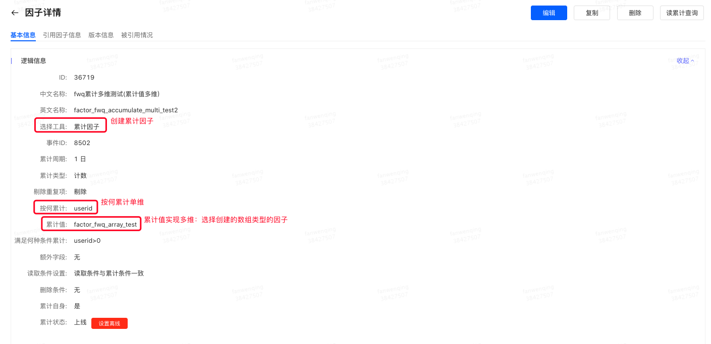
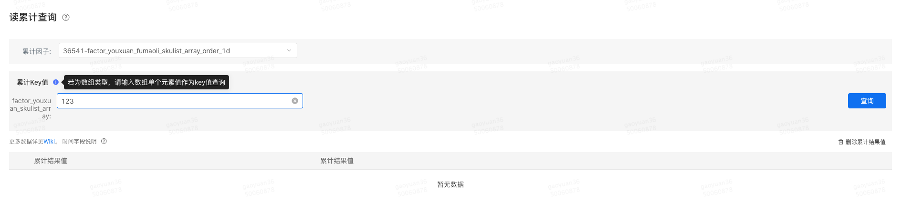
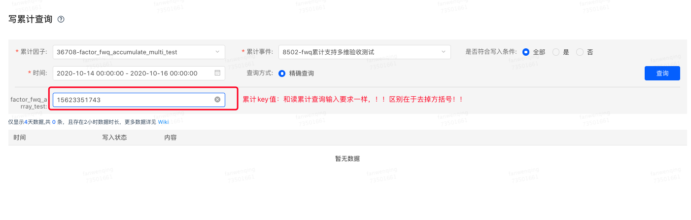

说明：多维累计操作手册
一、背景
（一）目前累计仅支持单值的累计，比如累计userid下的手机号。但对多值，目前支持多个按何累计Key拼接方式，比如累计userid+uuid下的手机号，但对于同种key多值情况尚不支持，比如：
- 场景1：累计userid的手机号数量，其中手机号来自三个字段schoolMobile、bankMobile、hotelMobile，需要将一个请求中的这三个手机号转化成三个请求方可支持，多维累计上线后，可将这三个手机号转化成数组手机号即可，减少业务方侧数据改造成本以及与累计服务交互次数
- 场景2：累计手机号对应的用户的数量，其中手机号来自三个字段schoolMobile、bankMobile、hotelMobile，需要将一个请求中的这三个手机号转化成三个请求方可支持，多维累计上线后，可将这三个手机号转化成数组手机号即可，减少业务方侧数据改造成本以及与累计服务交互次数
（二）前端业务传参中存在Json数组格式，无法对数组中任一元素进行累计，目前只能由tatooine进行拆单并发调用，可能会造成同key不同value写累计覆盖情况，json格式如
[{
"buyPrice": 5.7,
"skuName": "吾吉梓鹌鹑蛋24枚/盒",
"quantity": 1,
"price": 5.99,
"skuAmount": 5.99,
"skuid": 129933
}, {
"buyPrice": 9.2,
"skuName": "雨润精肉丝200g±20g/盒",
"quantity": 1,
"price": 9.8,
"skuAmount": 9.8,
"skuid": 216492
}]多维累计上线后，可以一次对json数组中各元素的参数进行读写累计
即：多维累计支持了多值情况的按何累计（累计key）、累计值（value）和累计条件
二、名词解释
- 多维累计功能：累计因子支持多个维度进行累计，”按何累计“有多个维度或者”累计值“有多个维度。
- 使用数组类型因子实现多维配置：将需要多维配置的参数（例如，bankMobile,schoolMobile,hotelMobile）通过toArray扩展函数映射成一个数组类型的字段（factor_mobile），然后在累计因子页面的“按何累计”或“累计值”中配置factor_mobile
三、操作指南
3.1 用户配置流程说明
⚠️⚠️⚠️ 注意⚠️⚠️⚠️：“按何累计”中可以支持数组类型的因子与其他参数/因子进行组合，但是数组类型的因子只能有一个，且配置时需将数组类型的参数/因子放在首位。
3.1.1 使用数组类型因子实现多维配置

3.1.2 读累计查询和写累计查询
- 读累计查询：按何累计多维类型的累计因子与按何累计单维类型的累计因子在读累计查询的时候有区别：数组类型的key值只能单一查询，即只能输入数组单个元素值作为key值进行查询，目前无法支持按照数组格式查询
- 写累计查询：按何累计多维类型的累计因子，与读累计查询要求一样

3.2 Quick Start
------
3.3 详细操作流程说明
3.3.1 使用数组类型因子实现多维配置
Step1: 创建数组类型的因子
|
说明 |
页面 |
|---|---|
|
入口：规则-->因子-->添加因子 如右图所示：
|
（1）需要合并参数创建数组类型：  （2）json数组需要拆分元素创建数组类型：  |
Step2: 创建累计因子--按何累计多维
|
说明 |
页面 |
|---|---|
|
入口：规则-->因子-->添加因子 如右图所示：
|
 |
Step3: 创建累计因子--累计值多维
|
说明 |
页面 |
|---|---|
|
入口：规则-->因子-->添加因子 如右图所示：
|
 |
3.3.2 读累计查询和写累计查询
⭐️ 提示 ⭐️ ：累计值多维类型的累计因子的读累计查询和写累计查询与普通因子无区别，下面详细操作不再列出说明
-
读累计查询--按何累计多维类型的累计因子
|
说明 |
页面 |
|---|---|
|
入口： 1.Plus+工具中心-->读累计查询 2.累计因子详情页面-->读累计查询 如右图所示：
|
 |
-
写累计查询----按何累计多维类型的累计因子
|
说明 |
页面 |
|---|---|
|
入口：Plus+工具中心-->读累计查询 如右图所示：
|
 |
4.特殊说明
⚠️ 1.“按何累计”中可以支持数组类型的因子与其他参数/因子进行组合，但是数组类型的因子只能有一个，且配置时需将数组类型的参数/因子放在首位。
⚠️ 2.“按何累计”与“累计值”若均为数组类型，则一一对应进行匹配运算。
⚠️ 3.“累计条件”中如果出现数组类型因子，则仅针对满足条件的数组元素发送累计。
⚠️ 4.若“按何累计”为单值（即不包含数组类型），“累计值”为数组类型，（1）若“累计类型”为计数或者求和，则读累计仍为单值；（2）若“累计类型”为最近几次，则读累计为List[List]格式，如[ [123,456] [123,456] [123,456]]。